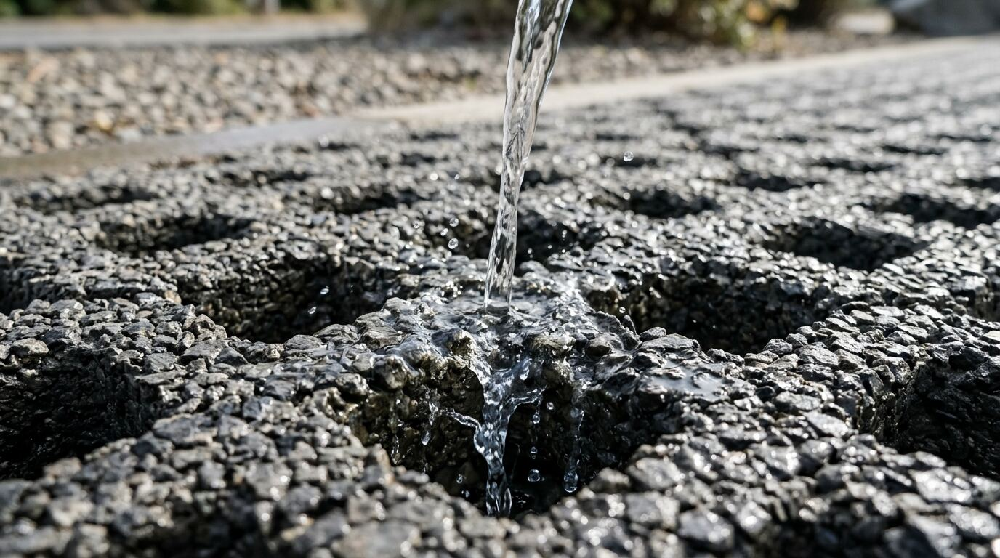

AquaPave
A wash pad that cleans water from car washing and reuses it on site
- Location
- Addis Ababa, Ethiopia
- Team
- 10 students, 7 departments
- Prototype
- Small test wash pad (2026/27)

How the wash pad works
AquaPave is a project by ten students from seven engineering departments at Addis Ababa Science and Technology University (AASTU). Instead of letting dirty wash water run into the street, we designed a small test wash pad that catches the water, cleans it, and stores it for reuse.
Water flows through the top of the pad. Big dirt and grit are trapped first. The water then passes through sand, charcoal, and pumice, and the remaining oil is separated before it reaches a storage tank. A small sensor checks the water level and how clean it is.
Main design numbers
Concrete top layer
Strong concrete with small holes (permeable concrete), made from 10–20 mm stones and no fine sand. It stops big dirt and grit. The cement raises the pH to 8.0–9.5, which helps lead and zinc settle out.
Small stones and filter fabric
A layer of 5–10 mm stones sits on a strong filter fabric. It traps fine dirt (about 80–96% of solid particles) and gives bacteria a place to break down oil.
Sand, charcoal, and pumice
Water passes through washed sand, charcoal, and pumice. Sand traps fine dirt, charcoal absorbs oil and soap, and pumice traps metals.
Collection pipe
A pipe with small holes collects the water at the bottom of the pad and carries it to the oil separator.
Oil separator
The water slows down in a small tank with walls that stop it from swirling. Oil floats to the top, where it can be removed. The tank is sized for tiny oil drops (about 0.1 mm) at 2 L/min.
Storage tank and sensor
The cleaned water is stored and used again for washing cars or cleaning floors. A small ESP32 board checks the water level and how clean it is, and warns when the pad starts to block.
The problem and our solution
Addis Ababa is short of clean water, and dirty water often blocks the drains. AquaPave cleans car-wash water before it reaches the street.
The problem
Addis Ababa can supply only about 40% of the water the city needs each day, so water has been rationed since 2019. Washing one car can use 100 to 200 liters of clean tap water.
In Addis Ketema, every garage we checked sends dirty water straight into open roadside drains. The water carries oil (12–325 mg/L), grit (186–561 mg/L), soap, lead, and zinc. Soap breaks the oil into tiny drops, so normal traps catch less than 40% of the oil. The rest pollutes rivers, blocks drains, and makes flooding worse.
Our solution
AquaPave puts drainage, dirt filtration, oil removal, metal removal, and water storage into one small wash pad that needs no pumps. It can be built with local materials.
Big grit is stopped at the concrete surface. The cement raises the pH to 8.0–9.5, which helps lead and zinc settle out. Filter fabric and sand catch fine dirt. Charcoal absorbs oil and soap. A small tank lets the rest of the oil float to the top. An ESP32 board checks the water level and how clean the water is, and warns when the pad starts to block.
Project goals and UN development goals
The project has five goals, from testing the dirty water to checking what it would cost to build. AquaPave mainly supports UN Sustainable Development Goal 6 (water), Goal 9 (infrastructure), and Goal 11 (sustainable cities). It also supports Goals 1 and 7.